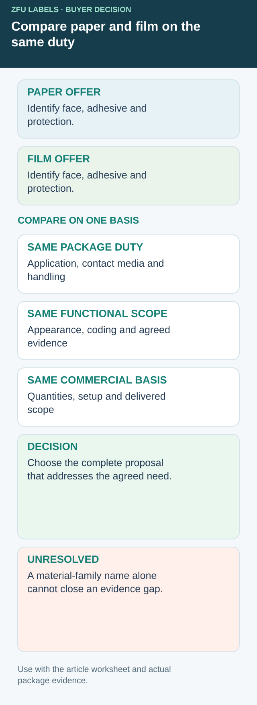

Compare complete paper and film offers for the same package duty
Paper versus film is a useful shortlist, but it is an incomplete purchase specification. A paper quote with one adhesive and finish cannot be compared with a film quote using different dimensions, coding arrangements and sample scope as though the face material were the only difference. First describe the common package duty, then make every proposed construction visible.


Use one actual package reference and the same labeling sequence for both offers. Specify later moisture, residues, handling and the required readable information. If those conditions are still unknown, ask the responsible operation to confirm them before choosing on a generic dry-food or wet-food category.
Like-for-like construction comparison sheet
| Common requirement | Paper proposal | Film proposal |
|---|---|---|
| Package and panel | Exact surface and agreed label footprint | Same reference, or disclosed difference |
| Finished construction | Face grade, adhesive, print and finish IDs | Corresponding complete identities |
| Application | Actual surface state and intended method | Same route represented by the sample |
| Service exposure | Recorded handling, moisture or residue needs | Same agreed conditions and observations |
| Appearance | Opaque/transparent intent, texture and reference | Appearance tradeoffs explicitly approved |
| Later coding | Marking method and reserved area | Compatibility evidence for that surface |
| Commercial scope | Quantity by artwork, setup, sampling and delivery basis | Matching scope or separately priced exceptions |
Fill blanks with unresolved rather than equal. A generic waterproof adjective cannot close the adhesive or finished-print rows. A paper option with a protective layer is also not equivalent to every unprotected paper, and two film constructions need not have the same properties. Ask the supplier for evidence relevant to the exact proposal instead of assigning a performance rating from the face family.
Decide what benefit you are buying
For an illustrative ambient honey jar, the brand may value paper texture while the operation needs the product name to survive expected handling. If the identified paper construction meets the agreed need, a film upgrade is not automatically necessary. If relevant exposure is unrepresented, an attractive paper sample is not enough either. This example establishes no result for either material.
An alternative could be a changed finish, a smaller label footprint or an opaque film with different artwork. Name the resulting benefit and compromise: texture, visibility of the contents, application format, later printing or quotation scope. Avoid paying for a material change to solve a problem that actually belongs to missing application information.
Separate comparison sampling from production release. A desk sample can help shortlist appearance without approving service. Record which conditions it represents and what additional evidence the responsible reviewer needs. When a sample substitutes a different adhesive or finish, keep that difference attached to it; do not approve the ordered construction under the sample's more favorable description.
Keep the chosen identity available for a reorder
Preserve the full specification and accepted sample with the purchase reference. Ask for notification of proposed substitutions that affect the assumptions behind approval. Reordering the same artwork on a different stock can reopen the comparison even when the label size does not change.
Use the finish-scope guide when the unresolved difference is laminate versus coating. Use the refrigerated-food guide when several chilled surfaces need grouping, and the sauce-exposure worksheet when actual contact media are missing. These narrower decisions should not be hidden inside a single paper-or-film vote.
Short answer
Compare paper and film food labels on the same package duty. Record the full construction, application conditions, finish, coding and quote scope. Material names are candidates rather than approval of a complete construction.
Paper labels: best use cases
Paper labels can make food packaging feel natural, craft or premium. They are commonly used for dry jars, bakery boxes, spice containers, honey jars, pantry goods and indoor retail packs.
- Dry food jars, pantry products and spice packaging.
- Bakery boxes, paper bags and gift food packaging.
- Premium designs that need texture or a softer printed surface.
- Short-run food labels where a natural look matters more than wet resistance.
Film labels: best use cases
Film labels are often selected when packaging is exposed to moisture, oil, refrigeration or repeated handling. White BOPP, clear BOPP and PET are common options for food and beverage packaging because they can hold up better than standard paper in demanding environments.
- Sauce bottles, dressing jars and oily food packaging.
- Refrigerated, frozen or condensation-prone food packs.
- Clear containers where a transparent label effect is needed.
- Pouches and curved containers where flexibility and adhesion matter.
Paper vs film labels comparison
| Decision point | Paper labels | Film labels |
|---|---|---|
| Look | Natural, textured, craft or premium. | Clean, durable, glossy, clear or high-color. |
| Moisture | Better for dry environments. | Review the complete proposed construction for the actual wet or chilled route. |
| Oil exposure | Needs careful review and finish selection. | Requires evidence for the actual sauce, oil and finished construction. |
| Clear packaging | Opaque paper look. | Clear film can create a no-label-look effect. |
| Application | Confirm the surface, cut size and actual application method. | Confirm construction and delivery format for the actual package and equipment. |
What to send before choosing material
Related guides
For wet packaging, read waterproof beverage labels. For chilled food, review refrigerated food label materials. For a closer film comparison, see clear BOPP vs white BOPP labels.
FAQ
Can film labels look premium?
Yes. Film labels can use matte, gloss or clear finishes and can be designed for a clean premium look, especially on bottles and transparent packaging.
Are paper labels cheaper than film labels?
Paper can be economical in many dry applications, but final pricing depends on size, quantity, finish, die-cut shape and packing format.
Can I use paper labels on refrigerated food?
Sometimes, but it needs review. Moisture, condensation and adhesive performance can make film a safer choice for cold storage.
Send the unresolved specification question
Include package reference, actual application and service route, competing complete construction proposals, dimensions and quantities on one basis.
Prepare a label specification inquiry. The contact form opens an email draft; review it and use the listed email or WhatsApp route for attachments. Available construction, sample scope, pricing and timing require confirmation for the actual job.